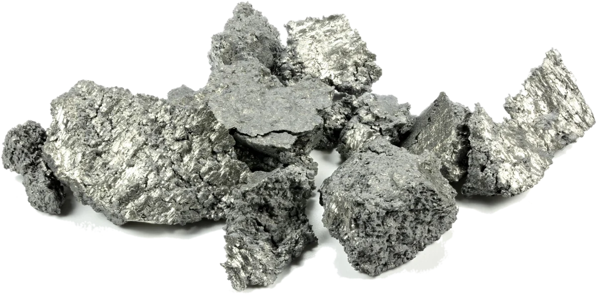

Ítrio (Y)
Você provavelmente nunca ouviu falar do ítrio, pois ele não é um elemento deveras famoso, mesmo assim, ele está nos LEDs, em lasers, em coroas dentárias e até em tratamentos contra o câncer.
Este site faz parte do meu trabalho interdisciplinar de Química e PWII, tendo sido orientado pelo professor Allan e pela professora Elaine.

Conheça o elemento
| Nome e símbolo | Ítrio (Y) |
|---|---|
| Número atômico (Z) | 39 |
| Massa atômica | 88,906 u |
| Grupo e período | Grupo 3, período 5 (metal de transição) |
| Estado físico (25 °C) | Sólido |
| Ponto de fusão | aprox. 1.522 °C |
| Ponto de ebulição | aprox. 3.345 °C |
| Densidade | 4,47 g/cm³ |
Aparência
É um metal sólido, de brilho prateado quase branco quando acaba de ser cortado, com o tempo no ar, pode escurecer um pouco: forma-se uma camada fina de óxido que o protege (passivação).

Propriedades
Ele é um metal de transição do Grupo 3, costuma entrar na lista das “terras raras” e é macio, maleável e dúctil; em pedaços maiores, aguenta bem o ar; já em pó fino é bem mais perigoso: pode pegar fogo sozinho (é pirofórico); também reage devagar com a água e libera gás hidrogênio.
Tópicos
Orientadores
Este trabalho foi orientado pela professora Elaine e pelo professor Allan.